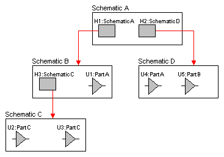
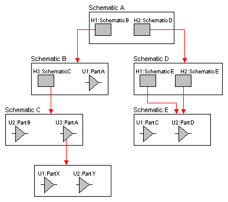

You can manage both schematic and VHDL design resources in
a hierarchical manner. That is, you can create schematic
pages containing hierarchical blocks or parts with
schematic or VHDL implementations. The hierarchical block
symbol (or part with an attached schematic page or model)
in the schematic page editor is the primary mechanism you
use to extend the scope of the design. Use hierarchical
blocks to partition the major functional regions of your
design using a block diagram.
Any schematic page can contain combinations of
hierarchical blocks or parts that refer to other schematics
or VHDL source files. This nesting structure can be many
levels deep. VHDL source files may only instantiate VHDL
models; you cannot refer to a schematic folder from within
a VHDL source file.
The schematic folder or VHDL entity at the top of a
hierarchy, which directly or indirectly refers to all other
modules in the design, is called the root module. In the
project manager's file tab, the root module has a
backslash on its folder icon. The root module folder, as
well as any other module folder, can contain as many
schematic pages or VHDL models as you require. Capture also
supports a combination of flat and hierarchical structures
such that a schematic folder containing multiple schematic
pages may be associated with a hierarchical block or part.
Simple hierarchies
A one-to-one correspondence between hierarchical blocks or parts and the schematic, EDIF or VHDL implementations they reference is called a simple hierarchy. The picture below is an example of a simple hierarchy typical of most PCB designs in Capture.

In a simple hierarchy, each hierarchical block or part with an attached schematic folder or VHDL model represents a unique design module. The project manager's hierarchy tab displays a simple hierarchical design as a tree of schematic pages.
Complex hierarchies
A complex hierarchy is one that includes a many-to-one correspondence between the hierarchical blocks or parts and their implementations (schematic, EDIF, or VHDL). The picture at right is an example of a complex hierarchy typical of most programmable logic designs in Capture. As shown in the picture, two hierarchical blocks (H1 and H2 on schematic D) reference the same schematic (schematic E).

In this section: